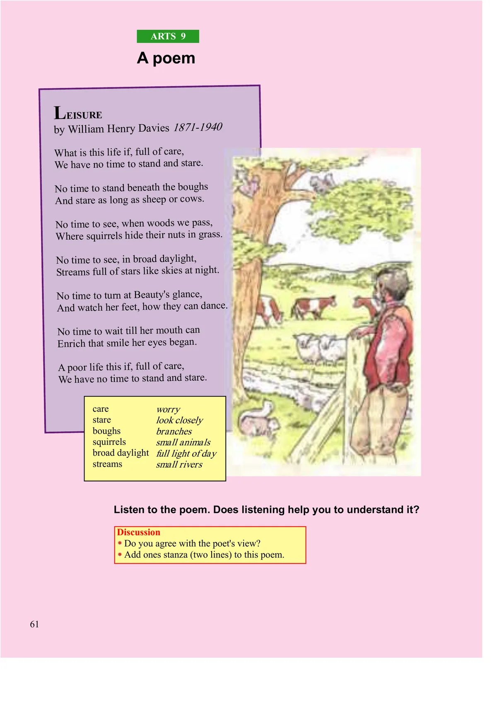

ARTS 9 A poem LEISURE — by William Henry Davies 1871-1940 What is this life if, full of care, We have no time to stand and stare. No time to stand beneath the boughs And stare as long as sheep or cows. No time to see, when woods we pass, Where squirrels hide their nuts in grass. No time to see, in broad daylight, Streams full of stars like skies at night. No time to turn at Beauty's glance, And watch her feet, how they can dance. No time to wait till her mouth can Enrich that smile her eyes began. A poor life this if, full of care, We have no time to stand and stare. Glossary box: care = worry | stare = look closely | boughs = branches | squirrels = small animals | broad daylight = full light of day | streams = small rivers Listen to the poem. Does listening help you to understand it? Discussion: • Do you agree with the poet's view? • Add ones stanza (two lines) to this poem.
Add ones stanza (two lines) to this poem. (ones بدل one).[
{
"num": 1,
"question": "1 Why do sheep and cows have time to stare?",
"model_answer": "Because animals graze peacefully under trees without human worries ('full of care'), work pressures or schedules.",
"explain_ar": "حياة الرعي الهادئة بلا هموم البشر."
},
{
"num": 2,
"question": "2 Why do squirrels hide their nuts?",
"model_answer": "To store food safely in the grass and woods for the winter.",
"explain_ar": "ادخار الغذاء لفصل الشتاء."
},
{
"num": 3,
"question": "3 How can streams be full of stars?",
"model_answer": "In broad daylight, bright sunlight sparkles and reflects on ripples in moving stream water so the water glitters like stars in a night sky.",
"explain_ar": "تشبيه بريق الشمس على تموّج الماء بنجوم السماء."
},
{
"num": 4,
"question": "4 Who or what is Beauty?",
"model_answer": "Nature / the natural world, personified by the poet as a graceful dancer.",
"explain_ar": "الطبيعة الخلابة مشخَّصةً في هيئة راقصة جميلة (حرف B الكبير يدل على التشخيص)."
},
{
"num": 5,
"question": "5 Who or what is smiling in the phrase that smile?",
"model_answer": "Beauty (nature itself) — blossoming joyfully like a smile that starts in her eyes and brightens her whole face.",
"explain_ar": "الطبيعة حين تشرق وتزدهر أمام الناظر المتأمل."
}
][
{
"num": 1,
"question": "Best summary among options 1, 2, and 3:",
"model_answer": "Sentence 3 ('We must forget our worries at times and see the beauty of nature') best summarizes the whole poem, because it unites both main ideas: letting go of 'care' (worries) and taking time to admire 'Beauty' (nature). Sentence 1 is too extreme ('any meaning'), while sentence 2 omits the poet's contrast with human worries.",
"explain_ar": "الجملة 3 تجمع محورَي القصيدة: الهموم (care) والتأمل في جمال الطبيعة."
}
][
{
"label_ar": "جملة الرأي حول الفكرة الرئيسة للقصيدة (WB 9 D)",
"placeholder": "I strongly agree with the poet's view because taking quiet moments away from daily worries to enjoy nature makes life happier and more meaningful."
},
{
"label_ar": "إضافة بيت شعري من سطرين على نفس الوزن والقافية (مناقشة PB ص 61)",
"placeholder": "No time to hear, where tall trees grow, / The gentle singing winds that blow."
}
]{
"pb_text_vs_image": "طُوبقت PB ص 61 مع pb-63.png: نُقلت أبيات القصيدة السبع الثنائية ومربع المعاني الستة وحُفظ خطأ 'Add ones stanza' حرفياً.",
"wb_ocr_vs_image": "طُوبقت WB ص 93–94 مع wb-094.png وwb-095.png وحُلّت A–D كاملةً."
}